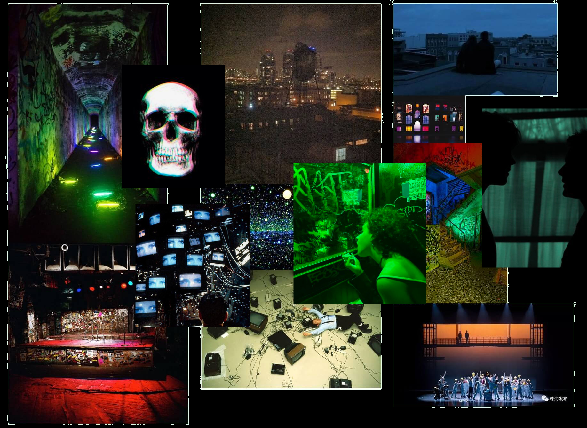

Perchance to Dream takes place in a world much like our own, where algorithms replace human connection, creative expression is commodified.
The show takes place entirely at the Elsinore. It's a music venue & hotel with a storied history, deep in a city that resembles the Lower East Side in the early 90s but in alternate future
Without getting into spoilers...Hamlet is a melancholy young man. His father has recently died, and his mother married his uncle very shortly after. The ghost of his father appears to him and reveals that he was murdered. Hamlet decides to feign insanity in order to prove his uncle's guilt, though as the play goes on we begin to wonder what is faked or not.
HAMLET Acerbic and melancholy. Heir to his father’s popular music venue, The Elsinore, and the underworld empire it's attracted.
GHOST The ghost of Hamlet’s father. Recently dead under suspicious circumstances.
OPHELIA Idealistic but with a dark fragility from an underlying addiction. She lives with her brother and father in one of the upstairs apartments.
CLAUDIUS Imposing, cunning, gets what he wants. Has taken over the Elsinore since his brother’s death.
GERTRUDE Elegant, exacting. Listens more than she speaks. Has married Claudius in the wake of her husband’s death
HORATIO A realist who cares deeply for others. Hamlet’s best friend.
LAERTES Confident, handsome with a classic cool edge. Sibling of Ophelia, overprotective since their mother's overdose when they were children.
ROSE Former college friend of Hamlet. Here for a good time, not a long time. The embodiment of chaotic neutral.
GUILDENSTERN Former college friend of Hamlet. An aspiring politician.